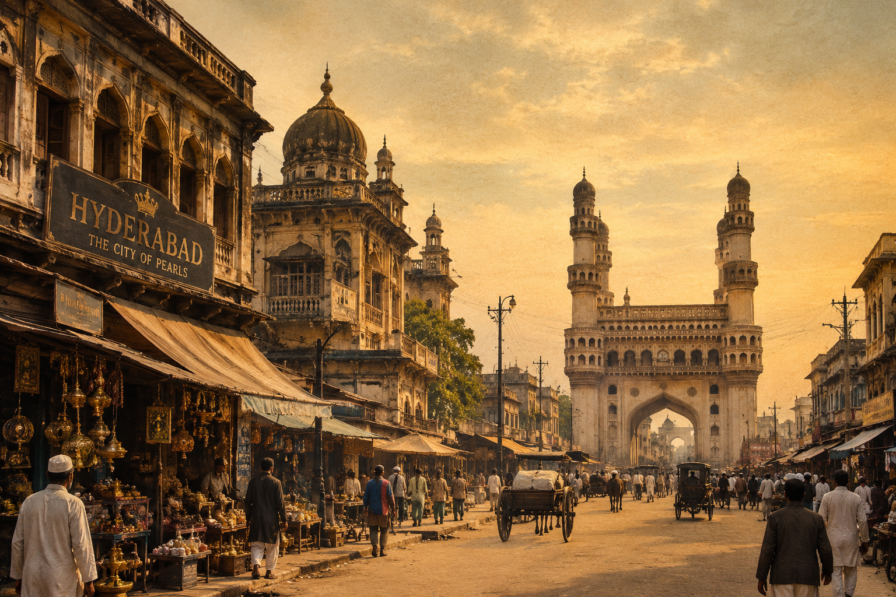

Visit Old City
Discover the Beauty of Old City Hyderabad
Explore the historic monuments, royal architecture, and rich cultural heritage of Hyderabad.
.jpeg)
Makkah Masjid
Discover one of Hyderabad's most famous historic mosques, known for its magnificent architecture and rich heritage.
Explore Makkah Masjid.jpeg)
Chowmahalla Palace
Step into the royal world of the Nizams and admire the palace's elegant halls, beautiful courtyards, and royal architecture.
Explore Chowmahalla Palace.jpeg)
Charminar
Visit Hyderabad's iconic landmark, famous for its four grand arches and its important place in the city's history.
Explore CharminarWhy Visit Old City Hyderabad?
Experience the history, culture and traditions of Hyderabad.
🏛️ Rich History
Explore historic monuments, royal palaces and ancient architecture.
🍛 Famous Food
Discover Hyderabadi biryani, Irani chai and traditional snacks.
🛍️ Local Markets
Explore traditional markets, bangles, pearls and local handicrafts.
📸 Beautiful Places
Capture memorable photographs of Hyderabad's famous landmarks.
Frequently Asked Questions
What are the famous places in Old Hyderabad?
Charminar, Makkah Masjid, Chowmahalla Palace and Laad Bazaar are popular attractions.
What food is Hyderabad famous for?
Hyderabad is famous for biryani, Irani chai and Osmania biscuits.
Is Old Hyderabad suitable for photography?
Yes. Its historic monuments, architecture and traditional markets offer many photography opportunities.
How can I learn about each monument?
Visit the Famous Places section of this website and select a monument to explore its history.
Meet Your Local Guide
Discover the hidden beauty, rich history, and culture of Old City Hyderabad with our local guide section.
.jpeg)
Your Hyderabad Heritage Guide
Explore the historic streets of Old City Hyderabad and discover the stories behind its famous monuments. Learn about the royal history of the Nizams, traditional markets, and local culture.
Places You Can Explore
- Charminar – The symbol of Hyderabad
- Makkah Masjid – A historic mosque
- Chowmahalla Palace – Royal heritage